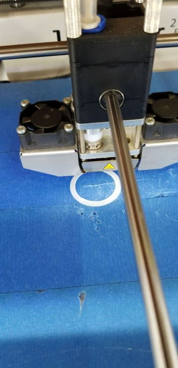
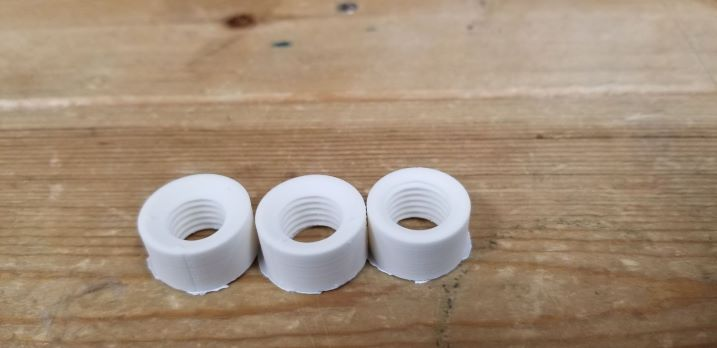

・今回は今までの試作からみえた課題の改善について記述します。
まず、真円については、アルティメーカーを使いプリントしたところ、綺麗な真円を印刷することができました。

続いて、ねじがかみ合わない問題についてです。ネットに書いてあったねじの作り方では、ねじのサイズを記憶にチェックを付けるように指示があります。14ミリのねじには14ミリのナットを、ということでしたが、これではプリントしたものが全く入っていきません。なので、ねじとナットを1ミリ寸法をずらすとスルスルと入って行くようになることがわかりました。下の写真は、同じ寸法で穴の開け方を変えたものや寸法をずらしたものなど、写真以外にも様々なパターンを作り、実験した時の写真です。
